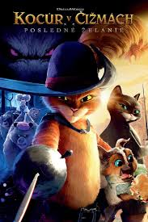
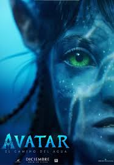
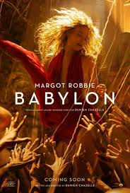
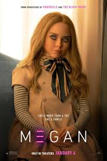
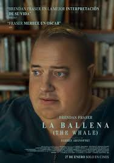

FESACFLIX
PELICULAS
Puss in boots: The Last Wish

Gato con Botas: el último deseo (título original en inglés:Puss in Boots: The Last Wish) es una película de comedia de aventuras animada por computadora producida por DreamWorks Animation y distribuida por Universal Pictures.
Quitar
Avatar: the Way of Water

Avatar: The Way of Water (titulada Avatar: El camino del agua en Hispanoamérica y Avatar: El sentido del agua en España) es una película estadounidense perteneciente al género de cine épico, ciencia ficción y aventura dirigida, producida y coescrita por James Cameron. Es la primera de las cuatro secuelas planificadas de su película Avatar.
Quitar
Babylon

Babylon es una película estadounidense de comedia dramática épica y cine histórico erótico escrita y dirigida por Damien Chazelle. La película cuenta con un elenco que incluye a Brad Pitt, Margot Robbie, Diego Calva, Jean Smart, Jovan Adepo, Li Jun Li y Tobey Maguire. Su trama narra el auge y la caída de múltiples personajes durante la transición de Hollywood del cine mudo al sonoro a finales de la década de 1920.
Quitar
M3GAN

Megan (estilizado como M3GAN o MΞGAN) es una película de terror de ciencia ficción estadounidense de 2022 dirigida por Gerard Johnstone. Fue escrito por Akela Cooper a partir de una historia de Cooper y James Wan (quien también produjo con Jason Blum). Allison Williams y Violet McGraw protagonizan, Amie Donald interpreta físicamente a M3GAN y Jenna Davis le da voz al personaje. Su trama sigue a una muñeca con inteligencia artificial, que desarrolla conciencia de sí misma y se vuelve hostil hacia cualquiera que se interponga entre ella y su compañero humano.
Quitar
The Whale

La ballena (título original en inglés: The Whale) es una película de drama psicológico estadounidense de 2022, dirigida por Darren Aronofsky. Escrita por Samuel D. Hunter, basada en su obra del mismo nombre, cuenta la historia de un profesor de literatura solitario con obesidad mórbida
Quitar